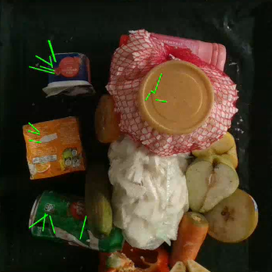
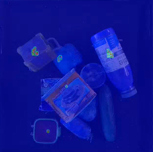

— RESEARCH BENCHMARK · ROBOTIC MANIPULATION · GRASPING IN CLUTTER
GRAB: Grasping Real-World
Attribute Benchmark
An integrated, real-world grasping-in-clutter benchmarking framework which evaluates the applicability of mainstream grasping modalities in extracting inorganic contaminants from food waste through 6D grasping approach.
Real-World Robotic
Grasping Pipeline
Repository ↗
This repository provides setup instructions for two grasping benchmark pipelines: a parallel grasping pipeline and a suction-based grasping pipeline.

Object Deformability Score (QO) Computation Methodology ↗
This uses Density-Aware Chamfer Distance to calculate the object deformation by comparing the before and after compression point clouds of deformable objects.
Grasping-in-Clutter
Experimental Procedure ↗
The experimental procedure consists of four stages of progressively increasing complexity of robotic grasping, each of which is explained in detail in this section.

GRAB Experiments and Failure Modes
Real-world demonstrations of robotic grasping experiments and observed failure modes across different clutter conditions.